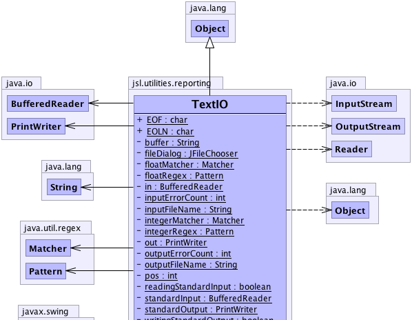
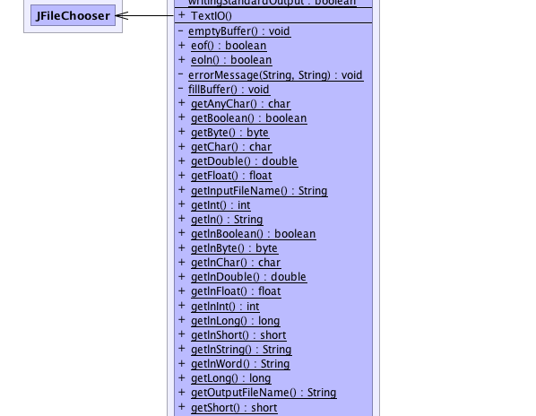
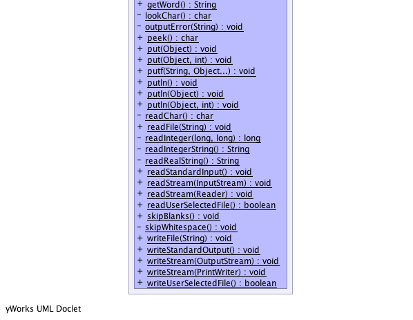

jsl.utilities.reporting.TextIO
jsl.utilities.reporting.TextIO
|
||||||||||
| PREV CLASS NEXT CLASS | FRAMES NO FRAMES | |||||||||
| SUMMARY: NESTED | FIELD | CONSTR | METHOD | DETAIL: FIELD | CONSTR | METHOD | |||||||||
java.lang.Object
public class TextIO
This class is from David Eck's Introduction to Java Programming (http://math.hws.edu/javanotes) TextIO provides a set of static methods for reading and writing text. By default, it reads from standard input and writes to standard output, but it is possible to redirect the input and output to files or to other input and output streams. When the standard input and output streams are being used, the input methods will not produce an error; instead, the user is repeatedly prompted for input until a legal input is entered. (If standard input has been changed externally, as by file redirection on the command line, this is not a reasonable behavior; to handle this case, TextIO will give up after 10 consecutive illegal inputs and will throw an IllegalArgumentException.) For the most part, any other error will be translated into an IllegalArguementException.
For writing to standard output, the output methods in this class pretty much duplicate the functionality of System.out, and System.out can be used interchangeably with them.
This class does not use optimal Java programming practices. It is designed specifically to be easily usable even by a beginning programmer who has not yet learned about objects and exceptions. Therefore, everything is in a single source file that compiles into a single class file, all the methods are static methods, and none of the methods throw exceptions that would require try...catch statements. Also for this reason, all exceptions are converted into IllegalArgumentExceptions, even when this exception type doesn't really make sense.
This class requires Java 5.0 or higher. (A previous version of TextIO required only Java 1.1; this version should work with any source code that used the previous version, but it has some new features, including the type of formatted output that was introduced in Java 5 and the ability to use files and streams.
|  |
|  |
|  |
| Field Summary | |
|---|---|
private static java.lang.String |
buffer
|
static char |
EOF
The value returned by the peek() method when the input is at end-of-file. |
static char |
EOLN
The value returned by the peek() method when the input is at end-of-line. |
private static javax.swing.JFileChooser |
fileDialog
|
private static java.util.regex.Matcher |
floatMatcher
|
private static java.util.regex.Pattern |
floatRegex
|
private static java.io.BufferedReader |
in
|
private static int |
inputErrorCount
|
private static java.lang.String |
inputFileName
|
private static java.util.regex.Matcher |
integerMatcher
|
private static java.util.regex.Pattern |
integerRegex
|
private static java.io.PrintWriter |
out
|
private static int |
outputErrorCount
|
private static java.lang.String |
outputFileName
|
private static int |
pos
|
private static boolean |
readingStandardInput
|
private static java.io.BufferedReader |
standardInput
|
private static java.io.PrintWriter |
standardOutput
|
private static boolean |
writingStandardOutput
|
| Constructor Summary | |
|---|---|
TextIO()
|
|
| Method Summary | |
|---|---|
private static void |
emptyBuffer()
|
static boolean |
eof()
Test whether the next character in the current input source is an end-of-file. |
static boolean |
eoln()
Test whether the next character in the current input source is an end-of-line. |
private static void |
errorMessage(java.lang.String message,
java.lang.String expecting)
|
private static void |
fillBuffer()
|
static char |
getAnyChar()
Reads the next character from the current input source. |
static boolean |
getBoolean()
Skips whitespace characters and then reads a value of type boolean from input. |
static byte |
getByte()
Skips whitespace characters and then reads a value of type byte from input. |
static char |
getChar()
Skips whitespace characters and then reads a single non-whitespace character from input. |
static double |
getDouble()
Skips whitespace characters and then reads a value of type double from input. |
static float |
getFloat()
Skips whitespace characters and then reads a value of type float from input. |
static java.lang.String |
getInputFileName()
If TextIO is currently reading from a file, then the return value is the name of the file. |
static int |
getInt()
Skips whitespace characters and then reads a value of type int from input. |
static java.lang.String |
getln()
Reads all the charcters from the current input source, up to the next end-of-line. |
static boolean |
getlnBoolean()
Skips whitespace characters and then reads a value of type boolean from input, discarding the rest of the current line of input (including the next end-of-line character, if any). |
static byte |
getlnByte()
Skips whitespace characters and then reads a value of type byte from input, discarding the rest of the current line of input (including the next end-of-line character, if any). |
static char |
getlnChar()
Skips whitespace characters and then reads a value of type char from input, discarding the rest of the current line of input (including the next end-of-line character, if any). |
static double |
getlnDouble()
Skips whitespace characters and then reads a value of type double from input, discarding the rest of the current line of input (including the next end-of-line character, if any). |
static float |
getlnFloat()
Skips whitespace characters and then reads a value of type float from input, discarding the rest of the current line of input (including the next end-of-line character, if any). |
static int |
getlnInt()
Skips whitespace characters and then reads a value of type int from input, discarding the rest of the current line of input (including the next end-of-line character, if any). |
static long |
getlnLong()
Skips whitespace characters and then reads a value of type long from input, discarding the rest of the current line of input (including the next end-of-line character, if any). |
static short |
getlnShort()
Skips whitespace characters and then reads a value of type short from input, discarding the rest of the current line of input (including the next end-of-line character, if any). |
static java.lang.String |
getlnString()
This is identical to getln(). |
static java.lang.String |
getlnWord()
Skips whitespace characters and then reads one "word" from input, discarding the rest of the current line of input (including the next end-of-line character, if any). |
static long |
getLong()
Skips whitespace characters and then reads a value of type long from input. |
static java.lang.String |
getOutputFileName()
If TextIO is currently writing to a file, then the return value is the name of the file. |
static short |
getShort()
Skips whitespace characters and then reads a value of type short from input. |
static java.lang.String |
getWord()
Skips whitespace characters and then reads one "word" from input. |
private static char |
lookChar()
|
private static void |
outputError(java.lang.String message)
|
static char |
peek()
Returns the next character in the current input source, without actually removing that character from the input. |
static void |
put(java.lang.Object x)
Write a single value to the current output destination, using the default format and no extra spaces. |
static void |
put(java.lang.Object x,
int minChars)
Write a single value to the current output destination, using the default format and outputting at least minChars characters (with extra spaces added before the output value if necessary). |
static void |
putf(java.lang.String format,
java.lang.Object... items)
Writes formatted output values to the current output destination. |
static void |
putln()
Write an end-of-line character to the current output destination. |
static void |
putln(java.lang.Object x)
This is equivalent to put(x), followed by an end-of-line. |
static void |
putln(java.lang.Object x,
int minChars)
This is equivalent to put(x,minChars), followed by an end-of-line. |
private static char |
readChar()
|
static void |
readFile(java.lang.String fileName)
Opens a file with a specified name for input. |
private static long |
readInteger(long min,
long max)
|
private static java.lang.String |
readIntegerString()
|
private static java.lang.String |
readRealString()
|
static void |
readStandardInput()
After this method is called, input will be read from standard input (as it is in the default state). |
static void |
readStream(java.io.InputStream inputStream)
After this method is called, input will be read from inputStream, provided it is non-null. |
static void |
readStream(java.io.Reader inputStream)
After this method is called, input will be read from inputStream, provided it is non-null. |
static boolean |
readUserSelectedFile()
Puts a GUI file-selection dialog box on the screen in which the user can select an input file. |
static void |
skipBlanks()
Skips over any whitespace characters, except for end-of-lines. |
private static void |
skipWhitespace()
Skips over any whitespace characters, including for end-of-lines. |
static void |
writeFile(java.lang.String fileName)
Opens a file with a specified name for output. |
static void |
writeStandardOutput()
After this method is called, output will be written to standard output (as it is in the default state). |
static void |
writeStream(java.io.OutputStream outputStream)
After this method is called, output will be sent to outputStream, provided it is non-null. |
static void |
writeStream(java.io.PrintWriter outputStream)
After this method is called, output will be sent to outputStream, provided it is non-null. |
static boolean |
writeUserSelectedFile()
Puts a GUI file-selection dialog box on the screen in which the user can select an output file. |
| Methods inherited from class java.lang.Object |
|---|
clone, equals, finalize, getClass, hashCode, notify, notifyAll, toString, wait, wait, wait |
| Field Detail |
|---|
public static final char EOF
public static final char EOLN
private static java.lang.String inputFileName
private static java.lang.String outputFileName
private static javax.swing.JFileChooser fileDialog
private static final java.io.BufferedReader standardInput
private static final java.io.PrintWriter standardOutput
private static java.io.BufferedReader in
private static java.io.PrintWriter out
private static boolean readingStandardInput
private static boolean writingStandardOutput
private static int inputErrorCount
private static int outputErrorCount
private static java.util.regex.Matcher integerMatcher
private static java.util.regex.Matcher floatMatcher
private static final java.util.regex.Pattern integerRegex
private static final java.util.regex.Pattern floatRegex
private static java.lang.String buffer
private static int pos
| Constructor Detail |
|---|
public TextIO()
| Method Detail |
|---|
public static void readStandardInput()
public static void readStream(java.io.InputStream inputStream)
public static void readStream(java.io.Reader inputStream)
public static void readFile(java.lang.String fileName)
public static boolean readUserSelectedFile()
NOTE: Calling this method starts a GUI user interface thread, which can continue to run even if the thread that runs the main program ends. If you use this method in a non-GUI program, it might be necessary to call System.exit(0) at the end of the main() routine to shut down the Java virtual machine completely.
public static void writeStandardOutput()
public static void writeStream(java.io.OutputStream outputStream)
public static void writeStream(java.io.PrintWriter outputStream)
public static void writeFile(java.lang.String fileName)
NOTE: Calling this method starts a GUI user interface thread, which can continue to run even if the thread that runs the main program ends. If you use this method in a non-GUI program, it might be necessary to call System.exit(0) at the end of the main() routine to shut down the Java virtual machine completely.
public static boolean writeUserSelectedFile()
public static java.lang.String getInputFileName()
public static java.lang.String getOutputFileName()
public static void put(java.lang.Object x)
public static void put(java.lang.Object x,
int minChars)
x - The value to be output, which can be of any type.minChars - The minimum number of characters to use for the output. If x requires fewer
then this number of characters, then extra spaces are added to the front of x to bring
the total up to minChars. If minChars is less than or equal to zero, then x will be printed
in the minumum number of spaces possible.public static void putln(java.lang.Object x)
public static void putln(java.lang.Object x,
int minChars)
public static void putln()
public static void putf(java.lang.String format,
java.lang.Object... items)
public static boolean eoln()
public static boolean eof()
public static char getAnyChar()
public static char peek()
public static void skipBlanks()
private static void skipWhitespace()
public static byte getlnByte()
public static short getlnShort()
public static int getlnInt()
public static long getlnLong()
public static float getlnFloat()
public static double getlnDouble()
public static char getlnChar()
public static boolean getlnBoolean()
Legal inputs for a boolean input are: true, t, yes, y, 1, false, f, no, n, and 0; letters can be either upper case or lower case. One "word" of input is read, using the getWord() method, and it must be one of these; note that the "word" must be terminated by a whitespace character (or end-of-file).
public static java.lang.String getlnWord()
public static java.lang.String getlnString()
public static java.lang.String getln()
public static byte getByte()
public static short getShort()
public static int getInt()
public static long getLong()
public static char getChar()
public static float getFloat()
public static double getDouble()
public static java.lang.String getWord()
public static boolean getBoolean()
Legal inputs for a boolean input are: true, t, yes, y, 1, false, f, no, n, and 0; letters can be either upper case or lower case. One "word" of input is read, using the getWord() method, and it must be one of these; note that the "word" must be terminated by a whitespace character (or end-of-file).
private static java.lang.String readRealString()
private static java.lang.String readIntegerString()
private static long readInteger(long min,
long max)
private static void errorMessage(java.lang.String message,
java.lang.String expecting)
private static char lookChar()
private static char readChar()
private static void fillBuffer()
private static void emptyBuffer()
private static void outputError(java.lang.String message)
|
||||||||||
| PREV CLASS NEXT CLASS | FRAMES NO FRAMES | |||||||||
| SUMMARY: NESTED | FIELD | CONSTR | METHOD | DETAIL: FIELD | CONSTR | METHOD | |||||||||